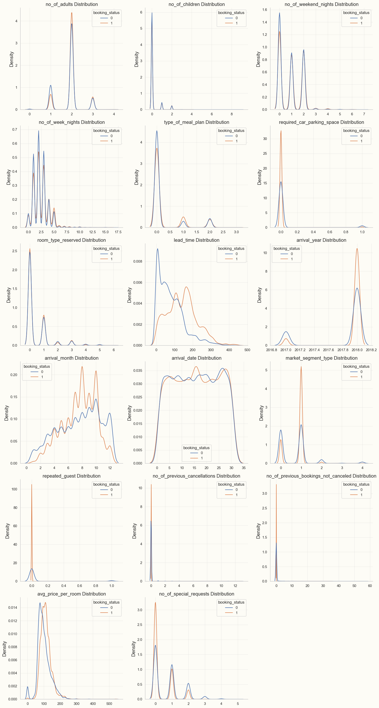

Eugene’s Deep Learning Journey
About
Eugene’s Deep Learning Blog
Categories
All
(9)
Improvements to a Classical Simulation of a Quantum Algorithm
This post is about a small project that I’ve been working on for the last month or so. I’ve been learning a lot about quantum computing lately, and as a theoretical…
Jan 16, 2024
Thoughts on the Value-Loading Problem
This is a blog post I started writing up in September. I wrote the first draft in about a week, then set it aside with the intent of polishing it up and doing more reading…
Nov 14, 2023

What I’ve Learned from My First Kaggle Competitions
In the…
Mar 15, 2023
Rubik’s Cube Solver
I have uploaded my old Rubik’s Cube project to GitHub here. The project doesn’t use deep learning or ML, but it may be interesting to readers nevertheless.
Mar 14, 2023
Analyzing Infant Mortality Rates by County, Race, and Income in North Carolina, 2011-2016
In November 2022, my friend gave me the datasets included in the “data” folder for this post as “Yr1116Birth.csv” and “Yr1116Death.csv” and told me to develop a model that…
Mar 7, 2023
Principal Components Analysis
For this blog post, I want to talk about principal components analysis (PCA). This is something I learned about from the great book
Introduction to Statistical Learning with R
by James, Witten, Hastie, and Tibshirani. This is another one of those “delve deeper into the math theory”…
Feb 2, 2023
Constructing a Neural-Net Digit Classifier (Almost) from Scratch
In this post, I am basically adapting Chapter 4 of the fast.ai book to extend the 3/7 classifier into a digit classifier for all digits. Just as in the book, I’m going to…
Jan 18, 2023
The Universal Approximation Theorem
I’ve read in the fast.ai book about the
universal approximation theorem
. It’s described vaguely, but since I am a mathematician by training, I’m going to try to do the following in this post: first, I’ll guess at the precise statement of the…
Jan 12, 2023
Welcome to my blog!
For my first entry, I will just plug my very simple bird-song classifier, which can be found here. It is hosted using the free platform Hugging Face…
Jan 10, 2023
No matching items